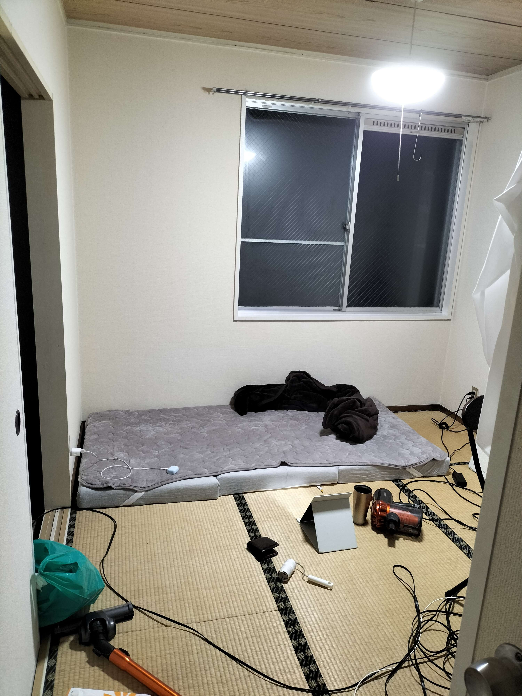

11月2日(日)
日記も写真もないです。
デカイ鏡買おうかなあ。と思ったりもするけど、やっぱりこの日記の自撮りのために数千円もかける許可が降りないので、買いそうにはない。
実は昨日、色々買ってきたんですよ。マットレス買いました。6000円で、結構フカフカ？フカフカっていうか、床で寝てる感じがしなくて、素材的にカビとかの心配も無さそう。
ちゃんとしたベッドより1段階寝心地は低いな、と、今考えたら思ったけど、私には十分か、あるいは、十分すぎる。
(私の言う"ちゃんとしたベッド"がラブホのベッドなのはすいません。)
暖かい寝巻きも買いました。上下セットで、5000円でした。2セット買ったので、1万円でした。私のスーツより高いです。
でも、私のイメージする暖かい寝巻きはそれしかなくて、ただまあ、これも、見掛け倒しだと思ってたんですけどね。
暖かいですね。コレ。服1枚でこんなに暖かくなるのが、あまり信じられてない。いや、そういうものがこの世界にあるのは分かってたけども、ユニクロで買えるとは夢にも思わなかったな。値段相応ってことなんですかね。
極暖みたいな、凄そうなpopとかも一切なかったんですけどね。
こんなに暖かい寝巻きあったら、冬の朝とか、全然動けますよ。というか、毛布、あんまりいらないんじゃないですか？暖房もあるらしいじゃないですか。
簡単で、大きめの棚も買いました。4×4かな。Amazonで買ったので、まだ、届いてないです。これは、届いたら写真を送りますよ。
棚に起きたいもの沢山あるんですよね。私一人分の食器と、インスタントの味噌汁と、調味料類と、財布と鍵とハンカチとティッシュと、コロコロしてホコリ取るやつと、あとティッシュケースのストック分と、捨てたくない多少の本とか。
今日も、掃除ばっかりしてました。墓の続きは作れてないです、すいません。
なんだか、掃除してもしても、床を歩くとゴミが落ちてるんですよ。私が潔癖症だからではない、、、と思うんだけどな。この空間にホコリの総量が多くて、とにかく習慣的に掃除してると減っていくのかなあ。ルンバがあると、解決されたりするんですかね。
私の掃除機、すごく弱いんですよね。あってないようなもん。和室の掃除に、ホウキが欲しいな。これは買いに行こうかな。百均で売ってそう。ホコリが溜まってそうなところ、重点的に潰して行ってみようかなあ。
今思ったけど、家の間取りくらいわかった方が、こういう話聞きやすいですよね。今からどうこうかんがえるのめんどくさいから、とりあえず和室写真だけやっぱり送ろ〜〜
おやすみ

